OREUM EDUTECH
[ EDUCATION ]
전국 자기주도학습센터의 운영부터 학습 관리까지 총괄하며, 데이터 기반 맞춤형 학습 지원 모델을 지원합니다.
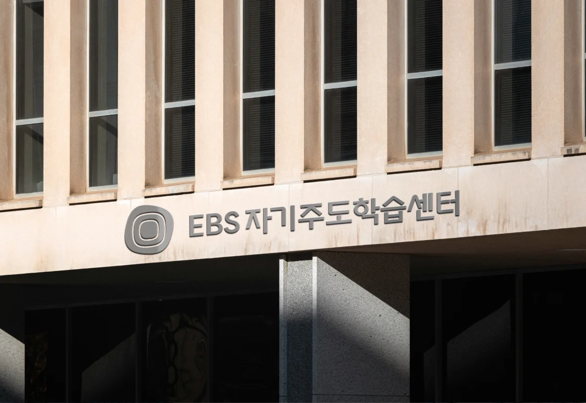
지역 간 교육 여건의 불균형으로 인해 발생하는 학습 기회의 격차와 시간·비용 부담을 완화하기 위해, 지역 특성에 맞는 학습 공간을 조성하고 EBS 콘텐츠를 활용한 공교육 연계 자기주도 학습 환경을 지원합니다.
교육개혁 과제 및 EBS·한국장학재단 프로그램, 지역 교육 자원을 연계하여 학교 안팎 학습을 종합적으로 지원하고, 학습 코디네이터와 다양한 교육·학습 프로그램이 제공되는 센터를 구축함으로써 지역 교육 발전에 기여하는 것을 최우선 과제로 합니다.
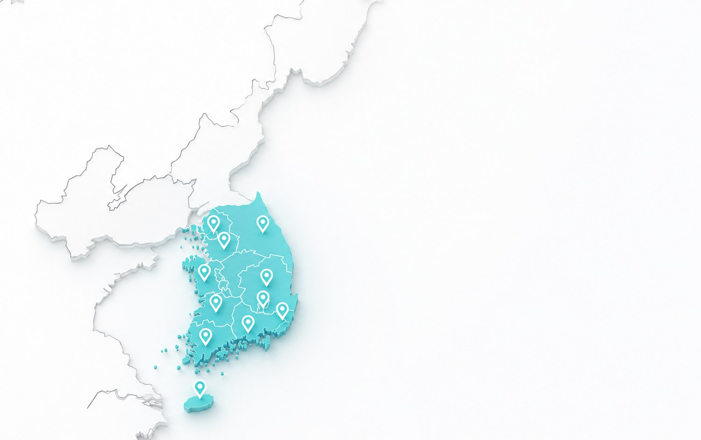
센터 환경 분석
전국 100개 센터의
정밀 교육 환경 진단 완료
사교육 참여율 및 학업성취도 기반
학생 환경 분석
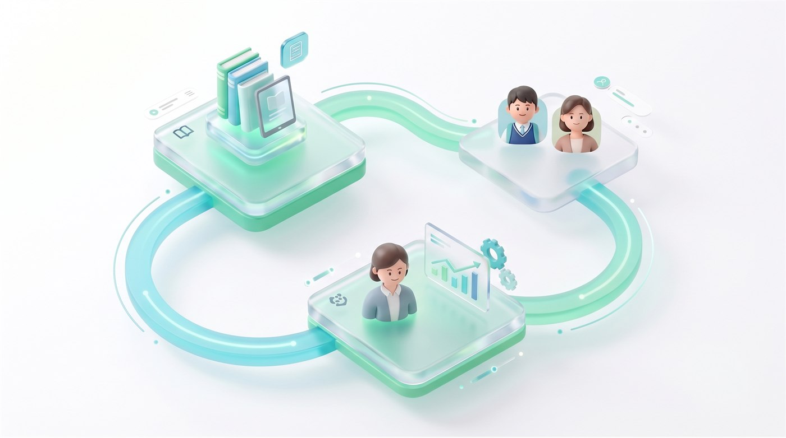
EBS 학습 콘텐츠 – 학생/학부모 – 학습 코디네이터가 하나의 흐름으로 연결되는 '성장 중심 학습 거버넌스'를 운영합니다.
실시간 학습 데이터와 학습 코디네이터의 자기주도학습 코칭을 통해 학생의 학습을 정교하게 설계합니다.
단순한 학습 지원을 넘어, 학생이 스스로 목표를 세우고 실행하며 성찰하는 과정을 돕는 학습 코칭 중심의 멘토링 모델입니다.
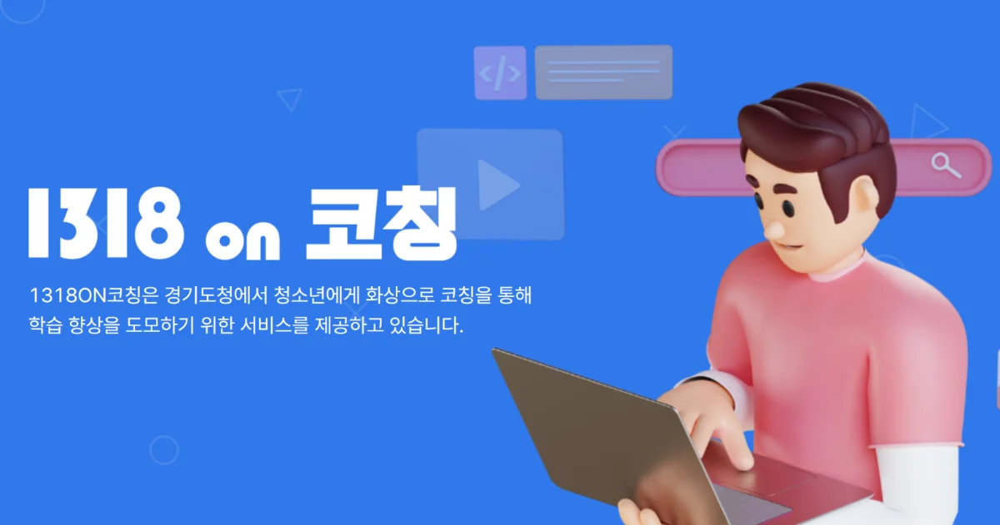
13년간 이어온 멘토링 사업 운영 경험을 기반으로, 학습 동기 부여, 정서적 지지, 학습 관리 코칭 등 멘토링의 핵심 요소를 체계화했습니다.
여기에 EBS AI 코스웨어 기반 진단 시스템을 접목하여 학생 개개인의 학습 수준과 취약 영역을 분석하고, 맞춤형 커리큘럼을 제공합니다.
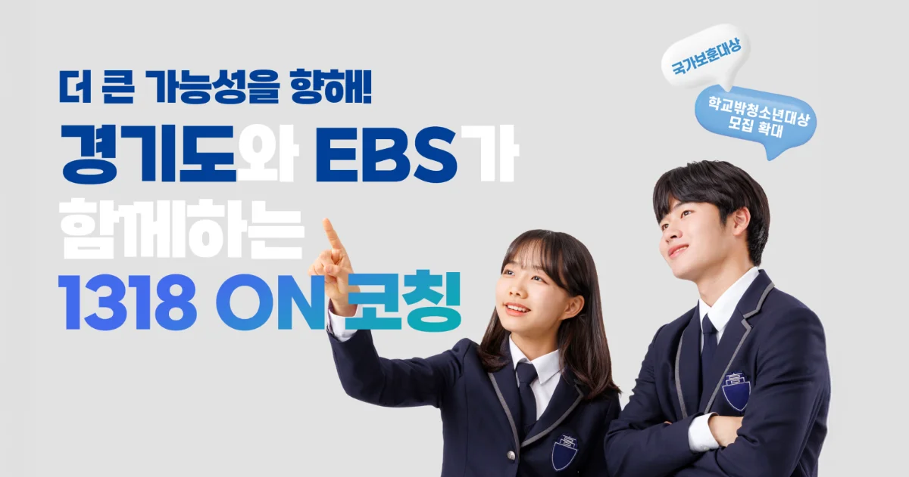
참여형 활동을 통해 학습 자존감과 지속 동기를 강화합니다.
그 결과 교과 성취도뿐 아니라 자기주도학습 역량과 학습 지속력이 함께 성장하는 구조를 구현합니다.
다양한 공공 교육 사업을 운영하며 폭넓은 교육 서비스 경험을 축적해왔습니다.
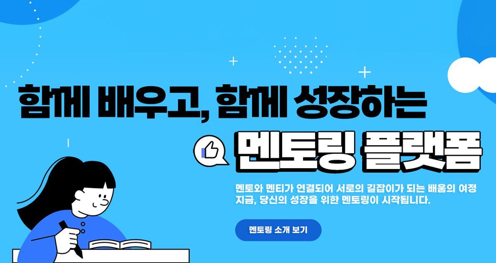
디지털 역량 강화, 코딩·SW 교육, 콘텐츠 산업 전문 교육 등 서로 다른 분야를 다루지만, 공통적으로 교육 기획부터 콘텐츠 제작, 현장 운영까지 전 과정을 수행하는 통합 운영 체계를 기반으로 합니다.
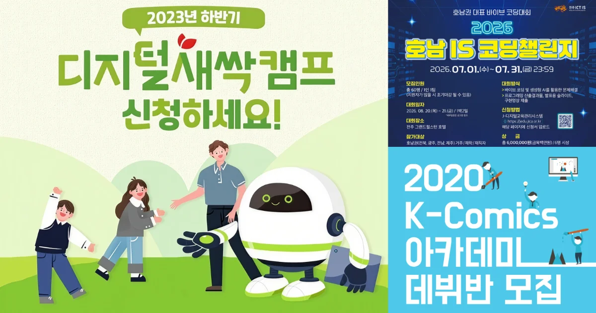
자기주도학습 프로그램과 멘토링 운영 경험을 바탕으로, 각 프로그램의 목적에 맞는 교육 자료를 직접 기획하고 제작합니다.
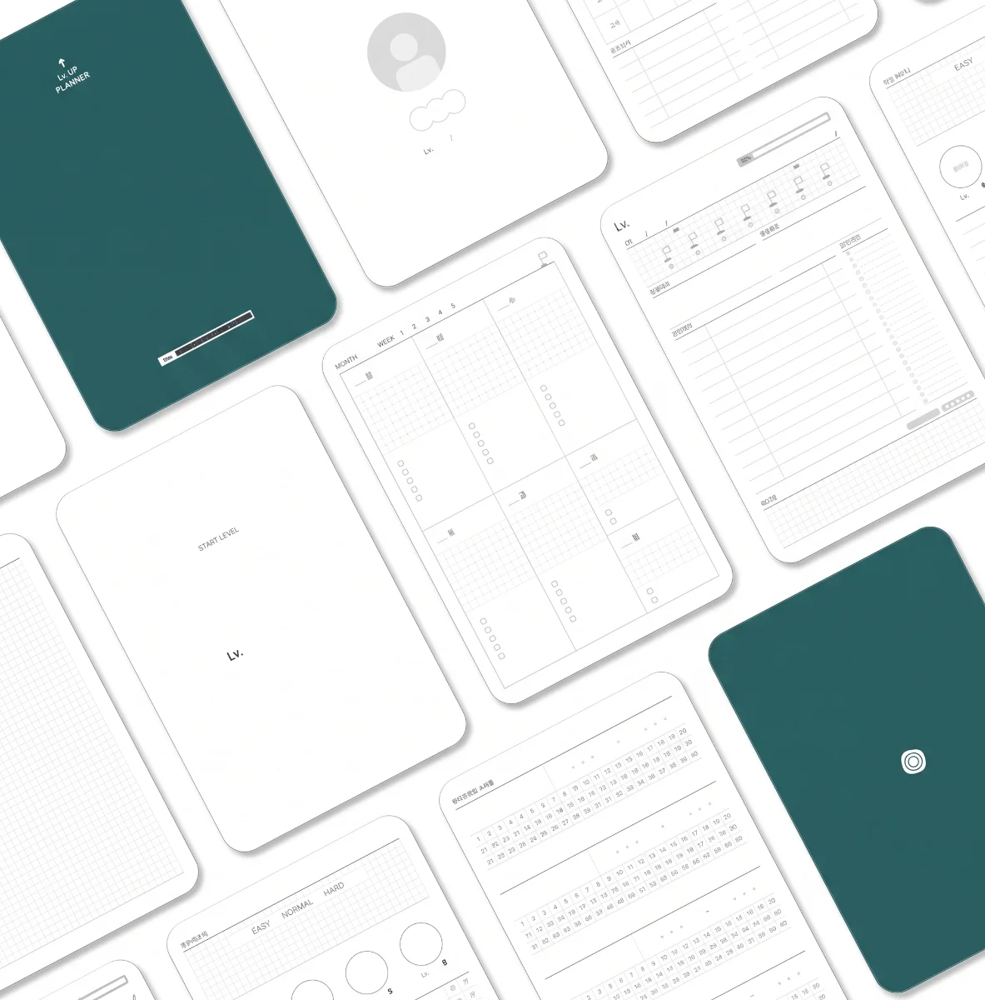
단순한 수업 운영을 넘어, 학습 목표에 맞춘 교안과 지도안을 체계적으로 설계하고 현장에서 바로 활용할 수 있는 수업 콘텐츠로 구현합니다.
학습자의 수준과 교육 목적에 맞는 단계별 학습 흐름을 구조화합니다.
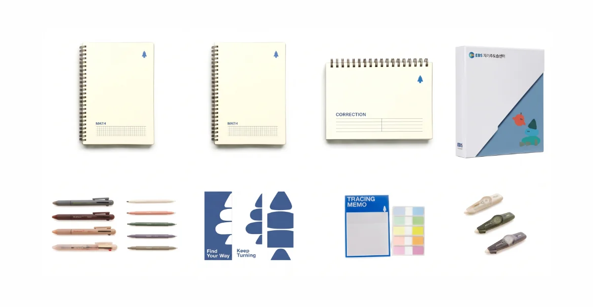
교육 운영 현장에서 쌓은 노하우와 콘텐츠 개발 역량을 결합해, 현장 적용성과 완성도를 모두 갖춘 교육 자료를 지속적으로 개발하고 있습니다.
다양한 주제의 온라인 교육 콘텐츠를 자체 기획·개발하고 운영합니다.
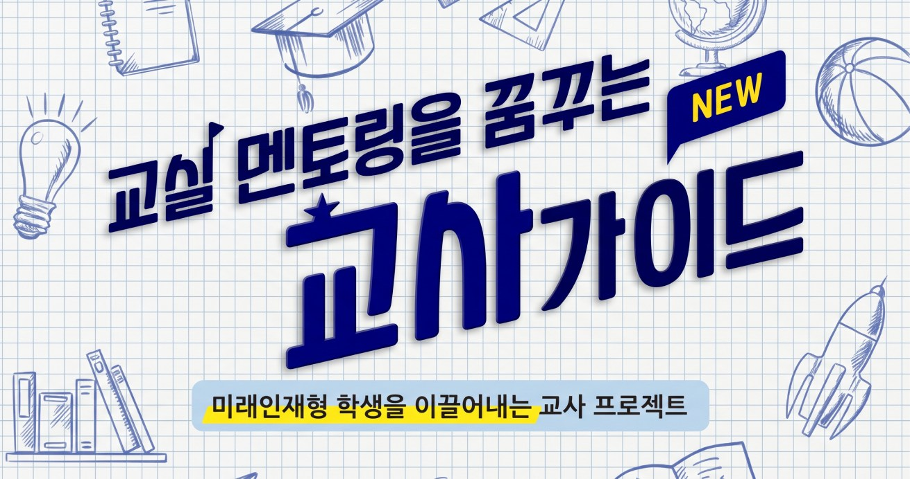
단순히 콘텐츠를 유통하는 데 그치지 않고, 교육 목적에 맞는 교안 및 지도안을 체계적으로 설계하고, 현장에서 바로 활용할 수 있도록 개발합니다.
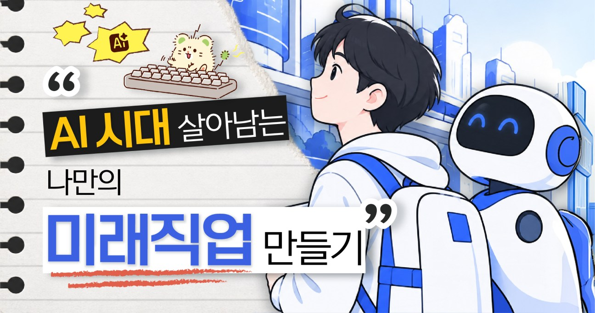
콘텐츠와 연계된 사용자 매뉴얼과 안내 영상도 함께 제작해, 학습자와 운영자가 콘텐츠를 효과적으로 활용할 수 있도록 지원합니다.